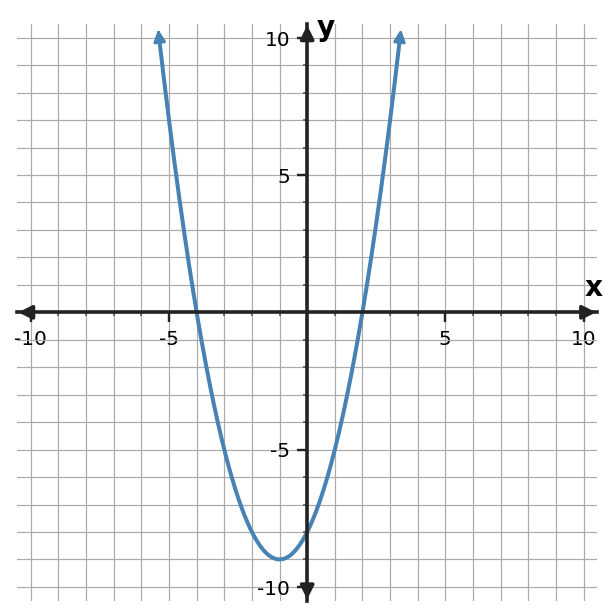

1. Use the table to identify the vertex, axis of symmetry, and direction of opening.
| x | y |
|---|---|
| -3 | -2 |
| -2 | 1 |
| -1 | 2 |
| 0 | 1 |
| 1 | -2 |
2. A student says the constant term of $y=x^2+2x-8$ is the vertex. Critique the claim.
3. For $y=-2x^2+5x+3$, predict the y-intercept and direction of opening.
4. Use the graph to identify the vertex and x-intercepts, then state a matching factored expression.

5. For $y=(x+4)(x-2)$, predict the x-intercepts and axis of symmetry.
6. A student claims the table has axis of symmetry $x=0$. Critique the claim and give the correct vertex.
| x | y |
|---|---|
| 0 | 1 |
| 1 | -2 |
| 2 | -3 |
| 3 | -2 |
| 4 | 1 |